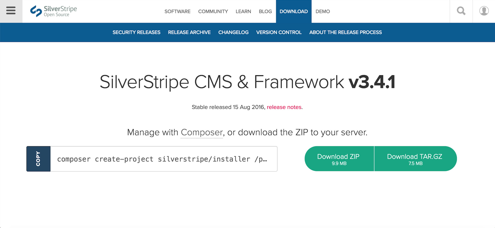

Loading Page
Loading PageInstallation Tutorial
Installing SilverStripe on a webhost is actually pretty simple. We shall demonstrate it below:
- Firstly, you will need either a localhost or a web host. We chose a free webhost called 000webhost. We did the basics such as setting up an account and a domain name.
- Next, you will have to download the SilverStripe CMS files. This can be done by navigating to www.silverstripe.org/download/ and choosing Download ZIP.

- Next, navigate to the file manager on your webhost and open public_html.
- Upload the downloaded ZIP file to the directory.
- After that, right click the ZIP file you uploaded and click extract.
- Next move all the extracted files from the public_html directory. You may now delete the redundant folder where the files were originally extracted to as well as the ZIP file.

- Now that we have our CMS files in our file repository, we can proceed to make a MySQL database.
- Click new database and enter new credentials for your new database. Make sure to enable all privileges and permissions.

- Now that we have both the CMS files as well as our database set up, we can proceed to install SilverStripe. Navigate to [Your URL]/install.php. You may get a few errors at first until you enter your database information.
- Next, scroll to the bottom and click Install SilverStripe.
- SilverStripe will now install and will be ready to use.